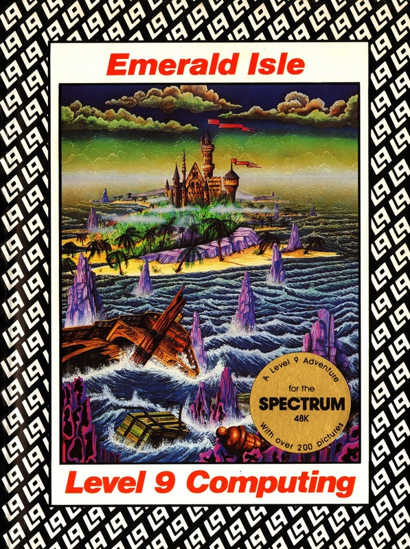
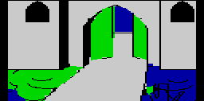
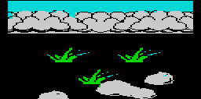
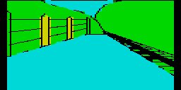
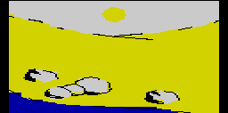

Emerald Isle


{kind=link}

| Publisher: | Level 9 Computing Ltd |
| Price: | £6.95 |
| Year: | 1985 |
| Source: | CRASH, Issue 16 |

If Level 9 were in the pop world they would be somewhere up there with The Police because their success is grounded in a deep understanding of their subject coupled with an uncanny knack of always remaining commercial. To stay at the top by standing on old successes is not enough, a fact with which Level 9 are fully aware, and so here we have their eleventh release and it’s not only good — it is perceptibly better.

The packaging is now a distinctive trademark; large, crisply printed with the familiar Level 9 logo and that substantive, rather expensive feel. No booklet to wade through this time though, only a few concise instructions on the reverse of a stylish drawing, a half-poster size version of the one on the front of the box. Admittedly art work can be expensive, but when it is of a high standard it really does add to your enjoyment of a game (and arty types always liven up a computer project).
Loading up reveals much made familiar by Return to Eden but one aspect is very new. On entering a location a smaller facsimile of the larger picture is very quickly drawn up on the top left portion before expanding to cover the entire width of the screen. The eventual full-size picture appears to be derived from the smaller by an enlargement brought about chiefly by widening the compact version. It would seem this process aids picture design and implementation though I am not totally sure in what way this is achieved.
Familiar features are the type-ahead, which allows commands to be entered while the program is busy drawing pictures, the A(GAIN) command which repeats the last entry, and the use of IT taken as the previous specified object eg, LIGHT LAMP, then EXAMINE IT. One aspect of the game can slow you up should you be a shade clever with the type-ahead. Although the type-ahead can store tens of moves entered quickly and display their affects as you sit back and watch, the need to press SHIFT whenever a location requires more space for the location description rather negates this. So a modifier is to say you can sit back and watch with your finger on the SHIFT key. All the same, this remains a very impressive feature.

The Emerald Isle is not across the sea from Liverpool (if I were writing for a slick, topicality obsessed magazine I could have contrived something about writing this on St. Patrick’s Day — but it isn’t, quite). No, this isle is set in that peculiar isosceles, the Bermuda Triangle, a land of mysterious fogs, treacherous waters and lots of angles that never quite add up to one hundred and eighty. Now that I’ve mentioned the word peculiar, it must have some peculiar significance as it is used to describe just about everything on the cover. ‘Explore peculiar towns, meet peculiar people, learn the peculiar purpose of the “letters” and travel on a railway which is simplicity itself when compared to BR’s peculiar fare system.’ Peculiar indeed, but what are these ‘letters’? Well, as you go about your travels you bump into the occasional vowel or consonant simply left lying around in your path. A ‘W’ is discovered cut into a lawn while an ‘A’ is found hanging in mid-air. Curious, but what we might come to expect from a software team quickly developing an in-house sense of humour nurtured in Return to Eden. Anyway, enough of this Salinger-like rambling and back to the plot.
You play the part of an aircraft pilot employed to ferry urgent documents around the Caribbean. Fierce winds seize the plane over the infamous triangle and you escape with your life at the last moment. As you parachute down to the island below you recognise the coastline of the Emerald Isle from an old map. It is a lonely atoll rarely visited and from which none have returned. It is said only one person may leave and that is the ruler of the land. Success can promote an explorer to King or Queen but failure is suitably unrewarding.

You start off with your parachute snagged on a branch of a mangrove tree, leaving you helplessly dangling high above the jungle floor. Escaping this ungainly (and dangerous) predicament, you fall into a mangrove maze which, thankfully, proves simple enough and resolved on a little wandering. Not far to the east you meet the first of many lengthy descriptions. ‘You are on the main square of the tree city, standing on a platform of wooden boards between which you can glimpse the twilight jungle below. Light wooden buildings surround the square and walkways lead away in many directions.’ And so the story unfolds with the ticket office kindly supplying a season ticket to take you on from the King’s palatial surroundings to the more rugged environs to the east of the island. All is dependable, plausible stuff with the odd humorous interlude to lighten the proceedings. Although few obvious puzzles demand attention, and it is very easy to wander around the countless locations, it would be imprudent to assume there is nothing to this adventure. Too many early objects or occurrences are enigmatic to believe you have the run of things (eg, the seamstress with her unfinished garments, or the many inoperative doors and barriers) and if you were to check how you’re doing, you’d be alarmed at the meagreness of your score.

The game runs smoothly, oiled by an exceptionally friendly vocabulary and a brevity that allows the first three letters of verb or noun or even just WA for WAIT for the train, and A for AGAIN until it arrives. ENT by itself has you boarding the train and merrily on your way. Other refinements become apparent with much play with the charming detail of L and R turning you left and right. The examine command is particularly helpful, giving a response when brought to bear on almost any object — EXAM TICKET gives, ‘Looks tatty. It’s valid for any one journey — just present it when you get on a train. It’s quite small.’ In general, the width of response is tremendous, all is intelligent and often witty too.
The quality of the pictures varies but there are graphics at each location and many are of a very high standard. As might be expected in a game with over 200 locations, many pictures are repeated or only modified so that three or four patterns become quite familiar after playing for a while. I particularly liked the picture of the railway station which makes you feel as if you really are there. The pictures can be discarded with WORDS when progress is then made rapid, aided by a very sure input making full use of the type-ahead.
Emerald Isle is a game which takes all the best aspects of adventuring and moulds them into a huge, yet detailed story which will have you engrossed for hours. It brings a fresh friendliness to the scene as not only is the vocabulary helpful, the structure is most open and even a beginner will find progress easy, interesting and rewarding. If only more adventure houses could achieve Level 9.
COMMENTS
| Difficulty: | Moderate |
| Graphics: | On every location, large and generally good |
| Presentation: | Good |
| Input facility: | Verb/noun |
| Responsibility: | Instantaneous without graphics, a few seconds with graphics but you can type in while graphics are drawing |
| General Rating: | Very good. |
| Atmosphere: | 9/10 |
| Vocabulary: | 9/10 |
| Logic: | 9/10 |
| Debugging: | 10/10 |
| Overall Value: | 9/10 |